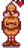

Hullócsillag szalon

| ” | „Éhes? Szomjas? Jöjjön hozzám!” |
| — Gus |
A Hullócsillag Szalon Gus tulajdonában van, helyileg Pelikán Város központjában található. Sok falusi jár ide a találkozások miatt. A hely változatos szórakozási lehetőségeket nyújt, köztük játszható árkád játékgépekkel, egy zenegéppel és egy Joja Cola automatával.
Menü
Gus számos ételt és receptet kínál eladásra. Árul továbbá forgó kínálatban főtt ételeket.
Ahhoz hogy vásárolni tudj a szalonban a pulton lévő pénztárgépnél kell klikkelni. Akkor lehetséges a vásárlás, ha Gus valahol a pult mögött tartózkodik.
Megjegyzés: A süti receptje azoknak a játékosoknak érhető el itt, akik látták Evelyn 4-szíves eseményét, de belefutottak abba a programhibába, hogy ennek ellenére sem kapták meg a kérdéses receptet.
Állandó kínálat
| Image | Name | Description | Price |
|---|---|---|---|
| Sör | Csak mértékkel fogyaszd. | ||
| Saláta | Egy egészséges kerti saláta. | ||
| Kenyér | Egy ropogós francia kenyér. | ||
| Spagetti | Egy régi kedvenc. | ||
| Pizza | Népszerű étel, és minden oka megvan rá. | ||
| Kávé | Finom az illata. Ez majd biztosan felélénkít. | ||
| Tócsni recept | Egy recept, amiből ez készíthető: Hashbrowns | ||
| Omlett recept | Egy recept, amiből ez készíthető: Omelet | ||
| Palacsinta recept | Egy recept, amiből ez készíthető: Pancakes | ||
| Kenyér recept | Egy recept, amiből ez készíthető: Bread | ||
| Tortilla recept | Egy recept, amiből ez készíthető: Tortilla | ||
| Pizza recept | Egy recept, amiből ez készíthető: Pizza | ||
| Maki tekercs recept | Egy recept, amiből ez készíthető: Maki Roll | ||
| Tripla eszpresszó recept | Egy recept, amiből ez készíthető: Tripla eszpresszó | ||
| Süti recept | Egy recept, amiből ez készíthető: Cookie |
Ideiglenes kínálat
A szalonban mennyiségi korlátozás nélkül elérhető a  Ráktorta
Ráktorta  550g-ért, átlagosan négy nappal az után, hogy megnézted Willy 6-szives jelenetét.
550g-ért, átlagosan négy nappal az után, hogy megnézted Willy 6-szives jelenetét.
Forgó kínálat
Gus véletlenszerűen kínál főtt ételt minden nap (néha úgy hivatkozik rá, hogy a "Nap étele"). Véletlenszerűen kiválasztja 1-től 14-ig a készleten levő főtt ételt és ezt adja el. Lent egy kinyitható táblázat arról, hogy milyen ételek érhetőek el és milyen áron ebben módban.
| Étel | Ár |
|---|---|
Zenegép
A játékosnak lehetősége van megváltoztatni az aktuális zeneszámot a zenegép segítségével. A zenegép minden olyan zeneszámot le tud játszani, amit a játékos már hallott a játékban. Lejátszhatóak itt az évszakok, a szives események és a fesztiválok zenéi.

Árkád
A szalonban lévő összes árkád gép játszható, bár a Junimo Kart megnyitásához egy kulcsra van szükség.
Journey of the Prairie King
Journey of the Prairie King egy árkád lövölde 3 világgal. Nyerd meg az összeset a speciális jutalomért.

Junimo Kart
Junimo Kart egy árkád játékgép, ami a koponyakulcs használatával nyitható. Játszd végig a "Progress Mode"-ot a special reward-ért.

Joja Italautomata
A szalonban az árkád játékgépek mellett van egy Joja italautomata, Joja Cola vásárolható belőle  75g-ért.
75g-ért.

Titok
Ha a játékos kacsamajonézet helyez a hátsó szobában csak részben látszó fém dobozba, akkor egy titkos  ??Pinky Lemon?? szobrot kap.
Galéria

Beltér
Előzmény
- 1.3.27: A ráktorta hozzáadva az ideiglenes készlethez Willy 6-szíves jelenete után.
- 1.4: Hozzádva a Tripla eszpresszó receptje. Eltávolítva a kenyér, a pizza, a saláta és a spagetti a forgó készletből. Csökkentett recept árak. Hozzádva a süti recept azoknak a játékosoknak, akik látták Emily 4-szíves eseményét, de nem kapták meg a recept.
- 1.5: A játékos fel tud ülni a bárszékekre.
| Épületek | ||
|---|---|---|
| Kereskedők | Ácsműhely • A Varázsló tornya • Jégkrémstand • Halbolt • Harvey klinikája • Hullócsillag szalon • JojaMart • Kalandorok céhe • Kaszinó • Kovács • Könyvkereskedő • Marnie tanyája • Oázis • Óriási tönk • Pierre boltja • Qi diós szobája • Romos ház • Sivatagi kereskedő • Szigeti kereskedő • Utazó szekér • Vulkáni törpe | |
| Házak | Elliott faháza • Faház • Folyó út 1 • Folyó út 2 • Fűzfa köz 1 • Fűzfa köz 2 • Hegyi út 24 • Lakókocsi • Leah kunyhója • Parasztház • Polgármester háza • Sátor | |
| Farm épületek | Gazdálkodás | Csűr • Halastó • Háziállat tálka • Istálló • Istálló (ló) • Kunyhó • Kút • Malom • Ragacsketrec • Raktár • Siló • Üvegház |
| Különleges | Arany óra • Farm obeliszk • Föld obeliszk • Junimo kunyhó • Sivatagi obeliszk • Sziget obeliszk • Víz obeliszk | |
| Egyéb | Boszorkány kunyhója • Fürdő • Joja raktárépület • Közösségi központ • Kutya karám • Mozi • Múzeum • Szigeti iroda | |